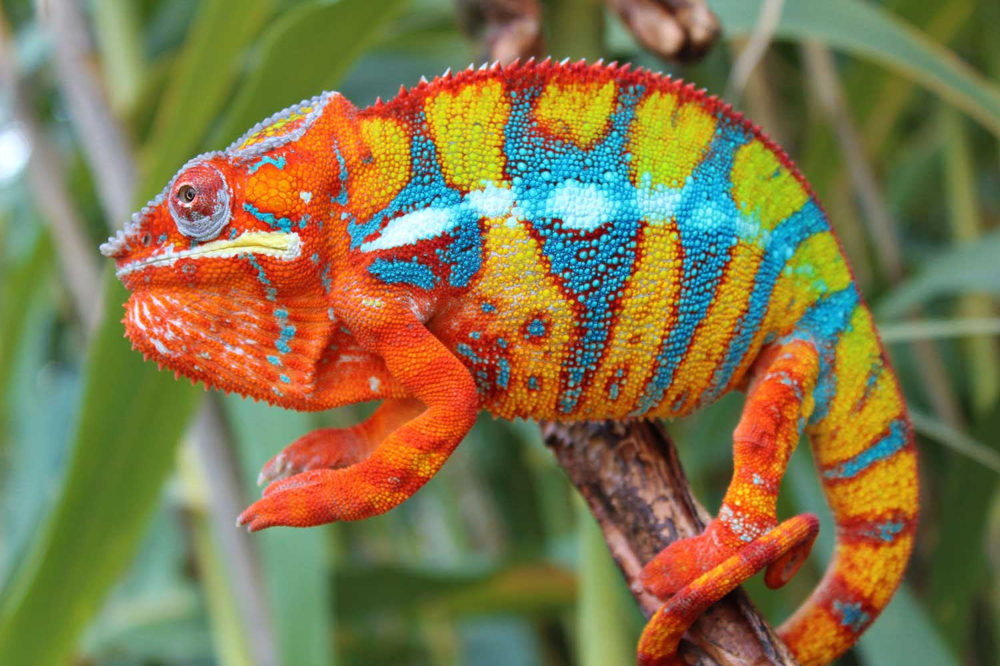

Panther Chameleon
< Mandarin Fish
Gibbon >
The Panther Chameleon (Furcifer pardalis) is a captivating reptile known for its vibrant and striking coloration, making it one of the most visually stunning species of chameleons. Native to the island of Madagascar, this arboreal lizard exhibits a remarkable ability to change its colors, displaying hues ranging from bright greens and blues to vibrant reds and oranges. The male Panther Chameleon is particularly renowned for its vivid color display, which serves various purposes including communication, thermoregulation, and camouflage. These chameleons have a prehensile tail, specialized feet for gripping branches, and independently moving eyes that provide them with a wide field of vision. Their diet primarily consists of insects, and they are well-adapted to the diverse ecosystems of Madagascar. Due to habitat loss and capture for the pet trade, conservation efforts are essential to ensure the survival of these unique and charismatic reptiles.
2023 Martin Prose